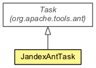

Java Annotation Indexer 2.0.0.Alpha1

- java.lang.Object
-
- org.apache.tools.ant.ProjectComponent
-
- org.apache.tools.ant.Task
-
- org.jboss.jandex.JandexAntTask
-
- All Implemented Interfaces:
- Cloneable
public class JandexAntTask
extends org.apache.tools.ant.Task
Ant Task that indexes jars, and saves the resulting index
- Author:
- Stuart Douglas
-
-
Field Summary
-
Fields inherited from class org.apache.tools.ant.Task
target, taskName, taskType, wrapper
-
Fields inherited from class org.apache.tools.ant.ProjectComponent
description, location, project
-
Method Summary
-
Methods inherited from class org.apache.tools.ant.Task
bindToOwner, getOwningTarget, getRuntimeConfigurableWrapper, getTaskName, getTaskType, getWrapper, handleErrorFlush, handleErrorOutput, handleFlush, handleInput, handleOutput, init, isInvalid, log, log, log, log, maybeConfigure, perform, reconfigure, setOwningTarget, setRuntimeConfigurableWrapper, setTaskName, setTaskType
-
Methods inherited from class org.apache.tools.ant.ProjectComponent
clone, getDescription, getLocation, getProject, setDescription, setLocation, setProject
-
-
Constructor Detail
-
JandexAntTask
public JandexAntTask()
-
Method Detail
-
isRun
public boolean isRun()
Copyright © 2014 JBoss by Red Hat. All rights reserved.